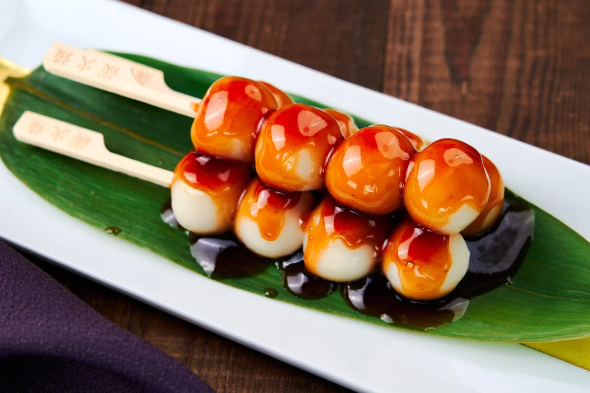

Mitarashi Dango

Mitarashi Dango is a classic Japanese snack and street food made by skewering rice dumplings and grilling them before glazing them in a thick sweet soy glaze.
Most of the flavor comes from the thick and shiny Mitarashi Dango Sauce used to glaze the dumplings. It's made with a combination of sugar, soy sauce, and starch, giving it a sweet and savory taste that's a little sweeter than teriyaki sauce. The dango are soft, springy, and chewy and have a nutty rice cracker flavor due to the way they're grilled at the end.
Ingredients
Odango
- 90 grams shiratamako(~1/2 cup)
- 1/4 teaspoon salt
- 1/4 cup + 1/2 tablespoon water
Mitarashi Dango Sauce
- 1/4 cup water
- 2 tablespoons mirin
- 1 tablespoon rice syrup(or corn syrup)
- 1 tablespoon kokutou
- 2 teaspoons soy sauce
- 1 teaspoon potato starch
Instructions
- Set a large pot of water on to boil. If you're using wooden skewers, soak them in water.
- Whisk the shiratamako and salt together in a large bowl and then pour in the water. Whisk together until the flour is evenly hydrated and crumbly.
- Use your hand to knead the dough into a smooth mass. If the dough is too wet, knead in a bit more shiratamako. If it's too dry and crumbly, knead another teaspoon of water. The dough should be about the texture of playdough.
- Use a scale to portion the dough and roll it into spheres with your hands. Each ball should be about 9.5 grams (1/3 ounce), and you should have around 16 balls.
- Gently roll the shaped dango into the boiling water and let them cook for a minute before giving them a stir.
- Cook the rice dumplings until they float to the surface, and then set a timer for 2 minutes.
- When the timer is up, transfer the dango to a bowl of cold tap water to chill before draining.
- Skewer four dumplings per skewer.
- Heat a seasoned cast iron skillet until scorching hot.
- Whisk the sauce ingredients together in a separate pan until the starch has dissolved.
- Add the dumpling skewers making sure they don't stick together, and grill until they're browned on one side. You can use a spatula to press down on them, so they brown evenly.
- Turn the heat on for the sauce and bring the mixture to a boil while stirring constantly. Continue boiling the sauce until it's thick, but not so much that it turns gloppy. Remove the sauce from the heat.
- Once the skewers have browned on one side, flip them over and brown the second side.
- Plate the finished Mitarashi Dango and spoon over the sauce.
Enjoy!